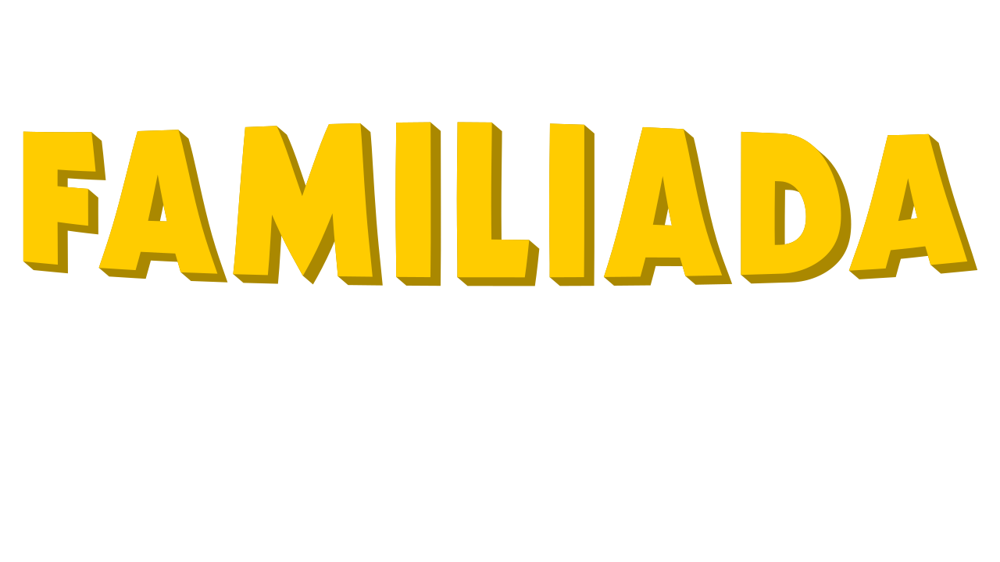

Logo Hosta — próba z Unbounded Black
Porównanie oryginalnego SVG i napisu z efektem rybiego oka oraz przestrzenną głębią.
Tekst logo
Kolor DOT
Waga fontu
Rozciągnięcie wysokości liter
Rozciągnięcie szerokości liter
Odstęp liter — wartość docelowa
Rybie oko
Głębokość 3D
Kąt głębi 3D
Skala logo w podglądzie
Oryginalne logo Familiady

Unbounded Black — wariant Hosta